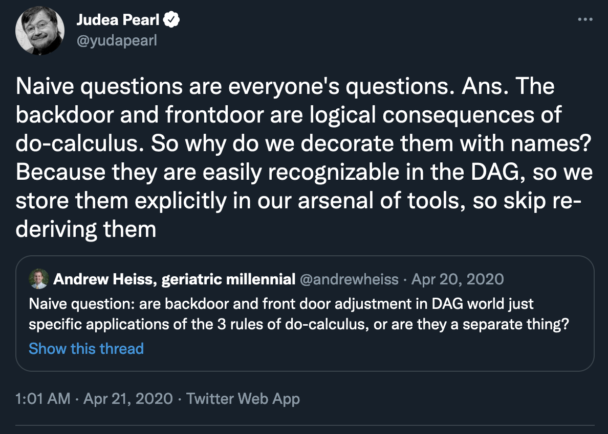

Do-calculus adventures! Exploring the three rules of do-calculus in plain language and deriving the backdoor adjustment formula by hand
Contents
- Exploring the rules of do-calculus
- Deriving the backdoor adjustment formula from do-calculus rules
- References
I’ve been teaching a course on program evaluation since Fall 2019, and while part of the class is focused on logic models and the more managerial aspects of evaluation, the bulk of the class is focused on causal inference. Ever since reading Judea Pearl’s The Book of Why in 2019, I’ve thrown myself into the world of DAGs, econometrics, and general causal inference, and I’ve been both teaching it and using it in research ever since. I’ve even published a book chapter on it. Fun stuff.
This post assumes you have a general knowledge of DAGs and backdoor confounding. Read this post or this chapter if you haven’t heard about those things yet.
DAGs are a powerful tool for causal inference because they let you map out all your assumptions of the data generating process for some treatment and some outcome. Importantly, these causal graphs help you determine what statistical approaches you need to use to isolate or identify the causal arrow between treatment and outcome. One of the more common (and intuitive) methods for idenfifying causal effects with DAGs is to close back doors, or adjust for nodes in a DAG that open up unwanted causal associtions between treatment and control. By properly closing backdoors, you can estimate a causal quantity using observational data. There’s even a special formula called the backdoor adjustment formula that takes an equation with a \(\operatorname{do}(\cdot)\) operator (a special mathematical function representing a direct experimental intervention in a graph) and allows you to estimate the effect with do-free quantities:
$$P(y \mid \operatorname{do}(x)) = \sum_z P(y \mid x, z) \times P(z)$$
When I teach this stuff, I show that formula on a slide, tell students they don’t need to worry about it too much, and then show how actually do it using regression, inverse probability weighting, and matching (with this guide). For my MPA and MPP students, the math isn’t as important as the actual application of these principles, so that’s what I focus on.
However—confession time—that math is also a bit of a magic black box for me too. I’ve read it in books and assume that it’s correct, but I never really fully understood why.
Compounding my confusion is the fact that the foundation of Judea Pearl-style DAG-based causal inference is the idea of do-calculus (Pearl 2012): a set of three mathematical rules that can be applied to a causal graph to identify causal relationships. Part of my confusion stems from the fact that most textbooks and courses (including mine!) explain that you can identify causal relationships in DAGs using backdoor adjustment, frontdoor adjustment, or the fancy application of do-calculus rules. When framed like this, it seems like backdoor and frontdoor adjustment are separate things from do-calculus, and that do-calculus is something you do when backdoor and frontdoor adjustments don’t work.
But that’s not the case! In 2020, I asked Twitter if backdoor and frontdoor adjustment were connected to do-calculus, and surprisingly Judea Pearl himself answered that they are!

They’re both specific consequences of the application of the rules of do-calculus—they just have special names because they’re easy to see in a graph.
But how? How do people apply these strange rules of do-calculus to derive these magical backdoor and frontdoor adjustment formulas? The question has haunted me since April 2020.
But in the past couple days, I’ve stumbled across a couple excellent resources (this course and these videos + this blog post) that explained do-calculus really well, so I figured I’d finally tackle this question and figure out how exactly do-calculus is used to derive the backdoor adjustment formula. I won’t show the derivation of the frontdoor formula—smarter people than me have done that (here and Section 6.2.1 here, for instance), but I can do the backdoor one now!
First, I’ll explain and illustrate how each of the three rules of do-calculus as plain-language-y as possible, and then I’ll apply those rules to show how the backdoor adjustment formula is created.
I use the ggdag and dagitty packages in R for all this, so you can follow along too. Here we go!
library(tidyverse) # For ggplot2 and friends
library(patchwork) # For combining plots
library(ggdag) # For making DAGs with ggplot
library(dagitty) # For dealing with DAG math
library(latex2exp) # Easily convert LaTeX into arcane plotmath expressions
library(ggtext) # Use markdown in ggplot labels
# Create a cleaner serifed theme to use throughout
theme_do_calc <- function() {
theme_dag(base_family = "Linux Libertine O") +
theme(plot.title = element_text(size = rel(1.5)),
plot.subtitle = element_markdown())
}
# Make all geom_dag_text() layers use these settings automatically
update_geom_defaults(ggdag:::GeomDagText, list(family = "Linux Libertine O",
fontface = "bold",
color = "black"))
Exploring the rules of do-calculus
The three rules of do-calculus have always been confusing to me since they are typically written as pure math equations and not in plain understandable language. For instance, here’s Judea Pearl’s canonical primer on do-calculus—a short PDF with lots of math and proofs (Pearl 2012). In basically everything I’ve read about do-calculus, there’s inevitably a listing of these three very mathy rules, written for people much smarter than me:

(From left to right: Lattimore and Rohde (2019), The Stanford Encyclopedia of Philosophy, Pearl (2012), Neal (2020))
However, beneath this scary math, each rule has specific intuition and purpose behind it—I just didn’t understand the plain-language reasons for each rule until reading this really neat blog post. Here’s what each rule actually does:
- Rule 1: Decide if we can ignore an observation
- Rule 2: Decide if we can treat an intervention as an observation
- Rule 3: Decide if we can ignore an intervention
Whoa! That’s exceptionally logical. Each rule is designed to help simplify and reduce nodes in a DAG by either ignoring them (Rules 1 and 3) or making it so interventions like \(\operatorname{do}(\cdot)\) can be treated like observations instead (Rule 2).
Let’s explore each of these rules in detail. In all these situations, we’re assuming that there’s a DAG with 4 nodes: W, X, Y, and Z. Y is always the outcome; X is always the main treatment. In each rule, our goal is to get rid of Z by applying the rule. When talking about interventions in a graph, there’s a special notation with overlines and underlines:
- An overline like
\(G_{\overline{X}}\)means that you delete all the arrows going into X - An underline like
\(G_{\underline{X}}\)means that you delete all the arrows coming out of X
I imagine this line like a wall:
- If the wall is on top of X like
\(\overline{X}\), you can’t draw any arrows going into it, so you delete anything going in - If the wall is on the bottom of X like
\(\underline{X}\), you can’t draw any arrows going out of it, so you delete anything going out
Rule 1: Ignoring observations
According to Rule 1, we can ignore any observational node if it doesn’t influence the outcome through any path, or if it is d-separated from the outcome. Here’s the formal definition:
$$P(y \mid z, \operatorname{do}(x), w) = P(y \mid \operatorname{do}(x), w) \qquad \text{ if } (Y \perp Z \mid W, X)_{G_{\overline{X}}}$$
There are a lot of moving parts here, but remember, the focus in this equation is \(z\). Our goal here is to remove or ignore \(z\). Notice how \(z\) exists on the left-hand side of the equation and how it is gone on the right-hand side. As long as we meet the cryptic conditions of \((Y \perp Z \mid W, X)_{G_{\overline{X}}}\), we can get rid of it. But what the heck does that even mean?
Here, \(G_{\overline{X}}\) means “the original causal graph with all arrows into X removed,” while the \(Y \perp Z \mid W, X\) part means “Y is independent of Z, given W and X” in the new modified graph. If the Y and Z nodes are d-separated from each other after we account for both W and X, we can get rid of Z and ignore it.
Let’s look at this graphically to help make better sense of this. We’ll use the dagify() function from ggdag to build a couple DAGs: one complete one ($G$) and one with all the arrows into X deleted ($G_{\overline{X}}$). X causes both X and Y, while W confounds X, Y, and Z.
rule1_g <- dagify(
Y ~ X + W,
X ~ W,
Z ~ X + W,
coords = list(x = c(X = 1, Y = 2, Z = 1.25, W = 1.5),
y = c(X = 1, Y = 1, Z = 2, W = 2))
)
rule1_g_x_over <- dagify(
Y ~ X + W,
Z ~ X + W,
coords = list(x = c(X = 1, Y = 2, Z = 1.25, W = 1.5),
y = c(X = 1, Y = 1, Z = 2, W = 2))
)
plot_rule1_g <- ggplot(rule1_g, aes(x = x, y = y,
xend = xend, yend = yend)) +
geom_dag_edges() +
geom_dag_point(color = "grey80", size = 10) +
geom_dag_text() +
labs(title = TeX("$G$"),
subtitle = "Original DAG") +
theme_do_calc()
plot_rule1_g_x_over <- ggplot(rule1_g_x_over, aes(x = x, y = y,
xend = xend, yend = yend)) +
geom_dag_edges() +
geom_dag_point(color = "grey80", size = 10) +
geom_dag_text() +
labs(title = TeX("$G_\\bar{x}$"),
subtitle = "DAG with arrows *into* X deleted") +
theme_do_calc()
plot_rule1_g | plot_rule1_g_x_over

If we want to calculate the causal effect of X on Y, do we need to worry about Z here, or can we ignore it? Let’s apply Rule 1. If we look at the modified \(G_{\overline{X}}\), Y and Z are completely d-separated if we account for both W and X—there’s no direct arrow between them, and there’s no active path connecting them through W or X, since we’re accounting for (or condition on) those nodes. Y and Z are thus d-separated and \(Y \perp Z \mid W, X\). We can confirm this with the impliedConditionalIndependencies() function from the dagitty package:
impliedConditionalIndependencies(rule1_g_x_over)
## W _||_ X
## Y _||_ Z | W, X
And there it is! The second independency there is \(Y \perp Z \mid W, X\). That means that we can apply Rule 1 and ignore Z, meaning that
$$P(y \mid z, \operatorname{do}(x), w) = P(y \mid \operatorname{do}(x), w)$$
This makes sense but is a little too complicated for me, since we’re working with four different nodes. We can simplify this and pretend that \(\operatorname{do}(x)\) is nothing and that X doesn’t exist. That leaves us with just three nodes—W, Y, and Z—and this DAG:
rule1_g_simple <- dagify(
Y ~ W,
Z ~ W,
coords = list(x = c(Y = 2, Z = 1, W = 1.5),
y = c(Y = 1, Z = 1, W = 2))
)
plot_rule1_g_simple <- ggplot(rule1_g_simple, aes(x = x, y = y,
xend = xend, yend = yend)) +
geom_dag_edges() +
geom_dag_point(color = "grey80", size = 10) +
geom_dag_text() +
labs(title = TeX("$G$"),
subtitle = "Simplified DAG without X") +
theme_do_calc()
plot_rule1_g_simple

The simplified X-free version of Rule 1 looks like this:
$$P(y \mid z, w) = P(y \mid w) \qquad \text{ if } (Y \perp Z \mid W)_{G}$$
In other words, we can ignore Z and remove it from the \(P(y \mid z, w)\) equation if Y and Z are d-separated (or independent of each other) after accounting for W. Once we account for W, there’s no possible connection between Y and Z, so they really are d-separated. We can again confirm this with code:
impliedConditionalIndependencies(rule1_g_simple)
## Y _||_ Z | W
There we go. Because \(Y \perp Z \mid W\) we can safely ignore Z.
Rule 2: Treating interventions as observations
Rule 1 is neat, but it has nothing to do with causal interventions or the \(\operatorname{do}(\cdot)\) operator. It feels more like a housekeeping rule—it’s a way of simplifying and removing unnecessary nodes that don’t have to do with the main treatment → outcome relationship.
With Rule 2, we start messing with interventions. In an experiment like a randomized controlled trial, a researcher has the ability to assign treatment and either \(\operatorname{do}(x)\) or not \(\operatorname{do}(x)\). With observational data, though, it’s not possible to \(\operatorname{do}(x)\) directly. It would be fantastic if we could take an intervention like \(\operatorname{do}(x)\) and treat it like regular non-interventional observational data. Rule 2 lets us do this.
According to Rule 2, interventions (or \(do(x)\)) can be treated as observations (or \(x\)) when the causal effect of a variable on the outcome ($X \rightarrow Y$) only influences the outcome through directed paths. The official math for this is this complicated thing:
$$P(y \mid \operatorname{do}(z), \operatorname{do}(x), w) = P(y \mid z, \operatorname{do}(x), w) \qquad \text{ if } (Y \perp Z \mid W, X)_{G_{\overline{X}, \underline{Z}}}$$
For me, this is super confusing, since there are two different \(\operatorname{do}(\cdot)\) operators here and when I think of causal graphs, I think of single interventions. Like we did with Rule 1, we can simplify this and pretend that there’s no intervention \(\operatorname{do}(x)\) (we’ll do the full rule in a minute, don’t worry). Again, this is legal because each of these rules are focused on messing with the Z variable: ignoring it or treating it as an observation. That leaves us with this slightly simpler (though still cryptic) equation:
$$P(y \mid \operatorname{do}(z), w) = P(y \mid z, w) \qquad \text{ if } (Y \perp Z \mid W)_{G_{\underline{Z}}}$$
Notice how the left-hand side has the interventional \(\operatorname{do}(z)\), while the right-hand side has the observed \(z\). As long as we meet the condition \((Y \perp Z \mid W)_{G_{\underline{Z}}}\), we can transform \(\operatorname{do}(z)\) into \(z\) and work only with observational data. Once again, though, what does this \((Y \perp Z \mid W)_{G_{\underline{Z}}}\) condition even mean?
Here, \(G_{\underline{Z}}\) means “the original causal graph with all arrows out of Z removed,” while the \(Y \perp Z \mid W\) part means “Y is independent of Z, given W” in the new modified graph. Similar to Rule 1, if the Y and Z nodes are d-separated from each other after we account for W, we can legally treat \(\operatorname{do}(z)\) like \(z\).
As we did with Rule 1, we’ll build a couple basic DAGs: a complete one ($G$) and one with all the arrows out of Z deleted ($G_{\underline{Z}}$).
rule2_g_simple <- dagify(
Y ~ Z + W,
Z ~ W,
coords = list(x = c(Y = 2, Z = 1, W = 1.5),
y = c(Y = 1, Z = 1, W = 2))
)
rule2_g_simple_z_under <- dagify(
Y ~ W,
Z ~ W,
coords = list(x = c(Y = 2, Z = 1, W = 1.5),
y = c(Y = 1, Z = 1, W = 2))
)
plot_rule2_g_simple <- ggplot(rule2_g_simple,
aes(x = x, y = y,
xend = xend, yend = yend)) +
geom_dag_edges() +
geom_dag_point(color = "grey80", size = 10) +
geom_dag_text() +
labs(title = TeX("$G$"),
subtitle = "Original DAG") +
theme_do_calc()
plot_rule2_g_simple_z_under <- ggplot(rule2_g_simple_z_under,
aes(x = x, y = y,
xend = xend, yend = yend)) +
geom_dag_edges() +
geom_dag_point(color = "grey80", size = 10) +
geom_dag_text() +
labs(title = TeX("$G_\\underline{Z}$"),
subtitle = "DAG with arrows *out of* Z deleted") +
theme_do_calc()
plot_rule2_g_simple | plot_rule2_g_simple_z_under

So, can we treat Z here like an observational node instead of a interventional \(\operatorname{do}(\cdot)\) node? Let’s apply Rule 2. If we look at the modified \(G_{\underline{Z}}\) graph, Z and Y are completely d-separated if we account for W—there’s no direct arrow between them, and there’s no active path connecting them through W since we’re conditioning on W. We can thus say that \(Y \perp Z \mid W\). We can confirm this with code too:
impliedConditionalIndependencies(rule2_g_simple_z_under)
## Y _||_ Z | W
Woohoo! Because \(Y \perp Z \mid W\) in that modified \(G_{\underline{Z}}\) graph, we can legally convert the interventional \(\operatorname{do}(z)\) to just a regular old observational \(z\):
$$P(y \mid \operatorname{do}(z), w) = P(y \mid z, w)$$
So far we’ve applied Rule 2 to a simplified DAG with three nodes, but what does it look like if we’re using the full four-node graph that is used in the formal definition of Rule 2?
$$P(y \mid \operatorname{do}(z), \operatorname{do}(x), w) = P(y \mid z, \operatorname{do}(x), w) \qquad \text{ if } (Y \perp Z \mid W, X)_{G_{\overline{X}, \underline{Z}}}$$
Here’s one graphical representation of a graph with the four nodes W, X, Y, and Z (but it’s definitely not the only possible graph! These do-calculus rules don’t assume any specific relationships between the nodes). Here, Y is caused by both X and Z, and we’ll pretend that they’re both interventions (so \(\operatorname{do}(x)\) and \(\operatorname{do}(z)\)). X is causally linked to Z, and W confounds all three: X, Y, and Z. Graph \(G\) shows the complete DAG; Graph \(G_{\overline{X}, \underline{Z}}\) shows a modified DAG with all arrows into X deleted ($\overline{X}$) and all arrows out of Z deleted ($\underline{Z}$).
rule2_g <- dagify(
Y ~ X + W + Z,
X ~ W,
Z ~ X + W,
coords = list(x = c(X = 1, Y = 2, Z = 1.25, W = 1.5),
y = c(X = 1, Y = 1, Z = 2, W = 2))
)
rule2_g_modified <- dagify(
Y ~ X + W,
Z ~ X + W,
coords = list(x = c(X = 1, Y = 2, Z = 1.25, W = 1.5),
y = c(X = 1, Y = 1, Z = 2, W = 2))
)
plot_rule2_g <- ggplot(rule2_g, aes(x = x, y = y,
xend = xend, yend = yend)) +
geom_dag_edges() +
geom_dag_point(color = "grey80", size = 10) +
geom_dag_text() +
labs(title = TeX("$G$"),
subtitle = "Original DAG") +
theme_do_calc()
plot_rule2_modified <- ggplot(rule2_g_modified,
aes(x = x, y = y,
xend = xend, yend = yend)) +
geom_dag_edges() +
geom_dag_point(color = "grey80", size = 10) +
geom_dag_text() +
labs(title = TeX("$G_{\\bar{X}, \\underline{Z}}$"),
subtitle = "DAG with arrows *into* X and *out of* Z deleted") +
theme_do_calc()
plot_rule2_g | plot_rule2_modified

Okay. Our goal here is to check if we can treat \(\operatorname{do}(z)\) like a regular observational \(z\). We can legally do this if Y and Z are d-separated in that modified graph, after accounting for both W and X, or \(Y \perp Z \mid W, X\). And that is indeed the case! There’s no direct arrow connecting Y and Z in the modified graph, and once we condition on (or account for) W and X, no pathways between Y and Z are active—Y and Z are independent and d-separated. We can confirm this with code:
impliedConditionalIndependencies(rule2_g_modified)
## W _||_ X
## Y _||_ Z | W, X
The second independency there is that \(Y \perp Z \mid W, X\), which is exactly what we want to see. We can thus legally transform \(\operatorname{do}(z)\) to \(z\):
$$P(y \mid \operatorname{do}(z), \operatorname{do}(x), w) = P(y \mid z, \operatorname{do}(x), w)$$
What’s really neat is that Rule 2 is a generalized version of the backdoor criterion. More on that below after we explore Rule 3.
Rule 3: Ignoring interventions
Rule 3 is the trickiest of the three, conceptually. It tells us when we can completely remove a \(\operatorname{do}(\cdot)\) expression rather than converting it to an observed quantity. Here it is in all its mathy glory:
$$P(y \mid \operatorname{do}(z), \operatorname{do}(x), w) = P(y \mid \operatorname{do}(x), w) \qquad \text{ if } (Y \perp Z \mid W, X)_{G_{\overline{X}, \overline{Z(W)}}}$$
In simpler language, this means that we can ignore an intervention (or a \(\operatorname{do}(\cdot)\) expression) if it doesn’t influence the outcome through any uncontrolled path—we can remove \(\operatorname{do}(z)\) if there is no causal association (or no unblocked causal paths) flowing from Z to Y.
This rule is tricky, though, because it depends on where the Z node (i.e. the intervention we want to get rid of) appears in the graph. Note the notation for the modified graph here. With the other rules, we used things like \(G_{\overline{X}}\) or \(G_{\underline{Z}}\) to remove arrows into and out of specific nodes in the modified graph. Here, though, we have the strange \(G_{\overline{Z(W)}}\). This Z(W) is weird! It means “any Z node that isn’t an ancestor of W.” We thus only delete arrows going into a Z node in the modified graph if that Z node doesn’t precede W.
Here’s one version of what that could look like graphically:
rule3_g <- dagify(
Y ~ X + W,
W ~ Z,
Z ~ X,
coords = list(x = c(X = 1, Y = 2, Z = 1.25, W = 1.5),
y = c(X = 1, Y = 1, Z = 2, W = 1.75))
)
plot_rule3_g <- ggplot(rule3_g,
aes(x = x, y = y,
xend = xend, yend = yend)) +
geom_dag_edges() +
geom_dag_point(color = "grey80", size = 10) +
geom_dag_text() +
labs(title = TeX("$G$"),
subtitle = "Original DAG") +
theme_do_calc()
plot_rule3_g_modified <- ggplot(rule3_g,
aes(x = x, y = y,
xend = xend, yend = yend)) +
geom_dag_edges() +
geom_dag_point(color = "grey80", size = 10) +
geom_dag_text() +
labs(title = TeX("$G_{\\bar{X}, \\bar{Z(W)}}$"),
subtitle = "DAG with arrows *into* Z deleted as long as Z isn't an<br>ancestor of W + all arrows *into* X deleted") +
theme_do_calc()
plot_rule3_g | plot_rule3_g_modified

Notice how these two graphs are identical. Because we only delete arrows going into Z if Z is not an ancestor of W, in this case \(G = G_{\overline{X}, \overline{Z(W)}}\).
Remember that our original goal is to get rid of \(\operatorname{do}(z)\), which we can legally do if Y and Z are d-separated and independent in our modified graph, or if \(Y \perp Z \mid W, X\). That is once again indeed the case here: there’s no direct arrow between Y and Z, and if we condition on W and X, there’s no way to pass association between Y and Z, meaning that Y and Z are d-separated. Let’s confirm it with code:
impliedConditionalIndependencies(rule3_g)
## W _||_ X | Z
## Y _||_ Z | W, X
That second independency is our \(Y \perp Z \mid W, X\), so we can safely eliminate \(\operatorname{do}(z)\) from the equation. We can ignore it because it doesn’t influence the outcome \(Y\) through any possible path. Goodbye \(\operatorname{do}(z)\)!:
$$P(y \mid \operatorname{do}(z), \operatorname{do}(x), w) = P(y \mid \operatorname{do}(x), w)$$
In this case, the alternative graph \(G_{\overline{X}, \overline{Z(W)}}\) was the same as the original graph because of the location of Z—Z was an ancestor of W, so we didn’t delete any arrows. If Z is not an ancestor, though, we get to actually modify the graph. For instance, consider this DAG:
rule3_g_alt <- dagify(
Y ~ X + W,
Z ~ W,
X ~ Z,
coords = list(x = c(X = 1, Y = 2, Z = 1.25, W = 1.5),
y = c(X = 1, Y = 1, Z = 2, W = 1.75))
)
rule3_g_alt_modified <- dagify(
Y ~ X + W,
Z ~ 0,
X ~ 0,
coords = list(x = c(X = 1, Y = 2, Z = 1.25, W = 1.5),
y = c(X = 1, Y = 1, Z = 2, W = 1.75))
)
plot_rule3_g_alt <- ggplot(rule3_g_alt,
aes(x = x, y = y,
xend = xend, yend = yend)) +
geom_dag_edges() +
geom_dag_point(color = "grey80", size = 10) +
geom_dag_text() +
labs(title = TeX("$G$"),
subtitle = "Original DAG") +
theme_do_calc()
plot_rule3_g_alt_modified <- ggplot(rule3_g_alt_modified,
aes(x = x, y = y,
xend = xend, yend = yend)) +
geom_dag_edges() +
geom_dag_point(color = "grey80", size = 10) +
geom_dag_text() +
labs(title = TeX("$G_{\\bar{X}, \\bar{Z(W)}}$"),
subtitle = "DAG with arrows *into* Z deleted as long as Z isn't an<br>ancestor of W + all arrows *into* X deleted") +
theme_do_calc()
plot_rule3_g_alt | plot_rule3_g_alt_modified
## Warning: Removed 1 rows containing missing values (geom_dag_point).
## Warning: Removed 1 rows containing missing values (geom_dag_text).

Phew. In this case, our DAG surgery for making the modified graph \(G_{\overline{X}, \overline{Z(W)}}\) actually ended up completely d-separating Z from all nodes. Because Z isn’t an ancestor of W (but is instead a descendant), we get to delete arrows going into it, and we get to delete arrows going into X as well. We can remove \(\operatorname{do}(z)\) from the equation as long as \(Y \perp Z \mid W, X\) in this modified graph. That is most definitely the case here. And once again, code confirms it (ignore the 0s here—they’re only there so that the DAG plots correctly):
impliedConditionalIndependencies(rule3_g_alt_modified)
## 0 _||_ W
## 0 _||_ Y | X
## W _||_ X
## W _||_ Z
## X _||_ Z | 0
## Y _||_ Z | 0
## Y _||_ Z | X
And once again, we can legally get rid of \(\operatorname{do}(z)\):
$$P(y \mid \operatorname{do}(z), \operatorname{do}(x), w) = P(y \mid \operatorname{do}(x), w)$$
Summary
Phew. Let’s look back at the three main rules and add their corresponding mathy versions, which should make more sense now:
-
Rule 1: Decide if we can ignore an observation
$$P(y \mid z, \operatorname{do}(x), w) = P(y \mid \operatorname{do}(x), w) \qquad \text{ if } (Y \perp Z \mid W, X)_{G_{\overline{X}}}$$ -
Rule 2: Decide if we can treat an intervention as an observation
$$P(y \mid \operatorname{do}(z), \operatorname{do}(x), w) = P(y \mid z, \operatorname{do}(x), w) \qquad \text{ if } (Y \perp Z \mid W, X)_{G_{\overline{X}, \underline{Z}}}$$ -
Rule 3: Decide if we can ignore an intervention
$$P(y \mid \operatorname{do}(z), \operatorname{do}(x), w) = P(y \mid \operatorname{do}(x), w) \qquad \text{ if } (Y \perp Z \mid W, X)_{G_{\overline{X}, \overline{Z(W)}}}$$
Deriving the backdoor adjustment formula from do-calculus rules
That was a lot of math, but hopefully each of these do-calculus rules make sense in isolation now. Now that I finally understand what each of these are doing, we can apply these rules to see where the pre-derived / canned backdoor adjustment formula comes from. Somehow by applying these rules, we can transform the left-hand side of this formula into the do-free right-hand side:
$$P(y \mid \operatorname{do}(x)) = \sum_z P(y \mid x, z) \times P(z)$$
Let’s go through the derivation of the backdoor adjustment formula step-by-step to see how it works. We’ll use this super simple DAG that shows the causal effect of treatment X on outcome Y, confounded by Z:
backdoor_g <- dagify(
Y ~ X + Z,
X ~ Z,
coords = list(x = c(Y = 2, X = 1, Z = 1.5),
y = c(Y = 1, X = 1, Z = 2))
)
plot_backdoor_g <- ggplot(backdoor_g, aes(x = x, y = y,
xend = xend, yend = yend)) +
geom_dag_edges() +
geom_dag_point(color = "grey80", size = 10) +
geom_dag_text() +
labs(title = TeX("$G$"),
subtitle = "Basic backdoor confounding") +
theme_do_calc()
plot_backdoor_g

Marginalizing across \(z\)
We’re interested in the causal effect of X on Y, or \(P(y \mid \operatorname{do}(x))\). If this were an experiment like a randomized controlled trial, we’d be able to delete all arrows going into X, which would remove all confounding from Z and allow us to measure the exact causal effect of X on Y. However, with observational data, we can’t delete arrows like that. But, we can condition the X → Y relationship on Z, given that it influences both X and Y.
We thus need to calculate the joint probability of \(P(y \mid \operatorname{do}(x))\) across all values of Z. Using the rules of probability marginalization and the chain rule for joint probabilities, we can write this joint probability like so:
$$P(y \mid \operatorname{do}(x)) = \sum_z P(y \mid \operatorname{do}(x), z) \times P(z \mid \operatorname{do}(x))$$
The right-hand side of that equation is what we want to be able to estimate using only observational data, but right now it has two \(\operatorname{do}(\cdot)\) operators in it, marked in red and purple:
$$\sum_z P(y \mid {\color{#FF4136} \operatorname{do}(x)}, z) \times P(z \mid {\color{#B10DC9} \operatorname{do}(x)})$$
We need to get rid of those.
Applying Rule 2
First let’s get rid of the red \(\color{#FF4136} \operatorname{do}(x)\) that’s in \(P(y \mid {\color{#FF4136} \operatorname{do}(x)}, z)\). This chunk of the equation involves all three variables: treatment, outcome, and confounder. Accordingly, we don’t really want to ignore any of these variables by using something like Rule 1 or Rule 3. Instead, we can try to treat that \(\color{#FF4136} \operatorname{do}(x)\) as an observational \(\color{#FF4136} x\) using Rule 2.
According to Rule 2, we can treat an interventional \(\operatorname{do}(\cdot)\) operator as observational if we meet specific criteria in a modified graph where we remove all arrows out of X:
$$P(y \mid {\color{#FF4136} \operatorname{do}(x)}, z) = P(y \mid {\color{#FF4136} x}, z) \qquad \text{ if } (Y \perp X \mid Z)_{G_{\underline{X}}}$$
Here’s the modified \(G_{\underline{X}}\) graph:
backdoor_g_underline_x <- dagify(
Y ~ Z,
X ~ Z,
coords = list(x = c(Y = 2, X = 1, Z = 1.5),
y = c(Y = 1, X = 1, Z = 2))
)
plot_backdoor_g_underline_x <- ggplot(backdoor_g_underline_x,
aes(x = x, y = y,
xend = xend, yend = yend)) +
geom_dag_edges() +
geom_dag_point(color = "grey80", size = 10) +
geom_dag_text() +
labs(title = TeX("$G_\\underline{X}$"),
subtitle = "DAG with arrows *out of* X deleted") +
theme_do_calc()
plot_backdoor_g | plot_backdoor_g_underline_x

Following Rule 2, we can treat \(\color{#FF4136} \operatorname{do}(x)\) like a regular observational \(\color{#FF4136} x\) as long as X and Y are d-separated in this modified \(G_{\underline{X}}\) graph when conditioning on Z. And that is indeed the case: there’s no direct arrow between X and Y, and by conditioning on Z, there’s no active pathway between X and Y through Z. Let’s see if code backs us up:
impliedConditionalIndependencies(backdoor_g_underline_x)
## X _||_ Y | Z
Perfect! Because \(Y \perp X \mid Z\), we can treat \(\color{#FF4136} \operatorname{do}(x)\) like \(\color{#FF4136} x\).
Applying Rule 3
After applying Rule 2 to the first chunk of the equation, we’re still left with the purple \(\color{#B10DC9} \operatorname{do}(x)\) in the second chunk:
$$\sum_z P(y \mid {\color{#FF4136} x}, z) \times P(z \mid {\color{#B10DC9} \operatorname{do}(x)})$$
This second chunk doesn’t have the outcome \(y\) in it and instead refers only to the treatment and confounder. Since it’s not connected with the outcome, it would be neat if we could get rid of that \(\color{#B10DC9} \operatorname{do}(x)\) altogether. That’s what Rule 3 is for—ignoring interventions.
According to Rule 3, we can remove a \(\operatorname{do}(\cdot)\) operator as long as it doesn’t influence the outcome through any uncontrolled or unconditioned path in a modified graph. Because we’re dealing with a smaller number of variables here, the math for Rule 3 is a lot simpler:
$$P(z \mid {\color{#B10DC9} \operatorname{do}(x)}) = P(y \mid {\color{#B10DC9} \text{nothing!}}) \qquad \text{ if } (X \perp Z)_{G_{\overline{X}}}$$
Here’s the simplified \(G_{\overline{X}}\) graph:
backdoor_g_overline_x <- dagify(
Y ~ X + Z,
coords = list(x = c(Y = 2, X = 1, Z = 1.5),
y = c(Y = 1, X = 1, Z = 2))
)
plot_backdoor_g_overline_x <- ggplot(backdoor_g_overline_x,
aes(x = x, y = y,
xend = xend, yend = yend)) +
geom_dag_edges() +
geom_dag_point(color = "grey80", size = 10) +
geom_dag_text() +
labs(title = TeX("$G_\\bar{X}$"),
subtitle = "DAG with arrows *into* X deleted") +
theme_do_calc()
plot_backdoor_g | plot_backdoor_g_overline_x

As long as X and Z are d-separated and independent, we can remove that \(\color{#B10DC9} \operatorname{do}(x)\) completely. According to this graph, there’s no direct arrow connecting them, and there’s no active pathway through Y, since Y is a collider in this case and doesn’t pass on causal association. As always, let’s verify with code:
impliedConditionalIndependencies(backdoor_g_overline_x)
## X _||_ Z
Huzzah! \(X \perp Z\), which means we can nuke the \(\color{#B10DC9} \operatorname{do}(x)\).
Final equation
After marginalizing across \(z\), applying Rule 2, and applying Rule 3, we’re left with the following formula for backdoor adjustment:
$$P(y \mid \operatorname{do}(x)) = \sum_z P(y \mid x, z) \times P(z)$$
That’s exactly the same formula as the general backdoor adjustment formula—we successfully derived it using do-calculus rules!
Most importantly, there are no \(\operatorname{do}(\cdot)\) operators anywhere in this equation, making this estimand completely do-free and estimable using non-interventional observational data! As long as we close the backdoor confounding by adjusting for Z (however you want, like through inverse probability weighting, matching, fancy machine learning stuff, or whatever else—see this chapter, or this blog post, or this guide for examples of how to do this), we can estimate the causal effect of X on Y (or \(P(y \mid \operatorname{do}(x))\)) with only observational data.
Here’s the derivation all at once:
$$
\begin{aligned} & [\text{Marginalization across } z + \text{chain rule for conditional probabilities}] \\ P(y \mid \operatorname{do}(x)) =& \sum_z P(y \mid {\color{#FF4136} \operatorname{do}(x)}, z) \times P(z \mid {\color{#B10DC9} \operatorname{do}(x)}) \\ & [\text{Use Rule 2 to treat } {\color{#FF4136} \operatorname{do}(x)} \text{ as } {\color{#FF4136} x}] \\ =& \sum_z P(y \mid {\color{#FF4136} x}, z) \times P(z \mid {\color{#B10DC9} \operatorname{do}(x)}) \\ & [\text{Use Rule 3 to nuke } {\color{#B10DC9} \operatorname{do}(x)}] \\ =& \sum_z P(y \mid {\color{#FF4136} x}, z) \times P(z \mid {\color{#B10DC9} \text{nothing!}}) \\ & [\text{Final backdoor adjustment formula!}] \\ =& \sum_z P(y \mid x, z) \times P(z) \end{aligned}
$$
That’s so so cool!
The frontdoor adjustment formula can be derived in a similar process—see the end of this post for an example (with that, you apply Rules 2 and 3 repeatedly until all the \(\operatorname{do}(\cdot)\) operators disappear)
And in cases where there’s no pre-derived backdoor or frontdoor adjustment formula, you can still apply these three do-calculus rules to attempt to identify the relationship between X and Y. Not all DAGs are fully estimable, but if they are estimable, the rules of do-calculus can be applied to derive the estimate. Fancier tools like Causal Fusion help with this and automate the process.
References
Lattimore, Finnian, and David Rohde. 2019. “Replacing the Do-Calculus with Bayes Rule,” December. https://arxiv.org/abs/1906.07125.
Neal, Brady. 2020. Introduction to Causal Inference from a Machine Learning Perspective. https://www.bradyneal.com/causal-inference-course.
Pearl, Judea. 2012. “The Do-Calculus Revisited.” In Proceedings of the Twenty-Eighth Conference on Uncertainty in Artificial Intelligence, 3–11. UAI’12. Arlington, Virginia: AUAI Press. https://dl.acm.org/doi/10.5555/3020652.3020654.